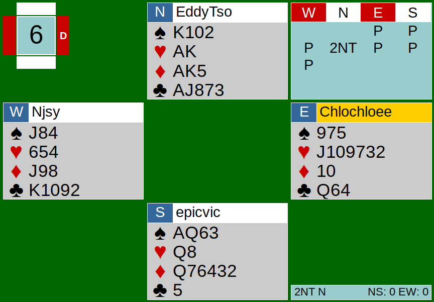
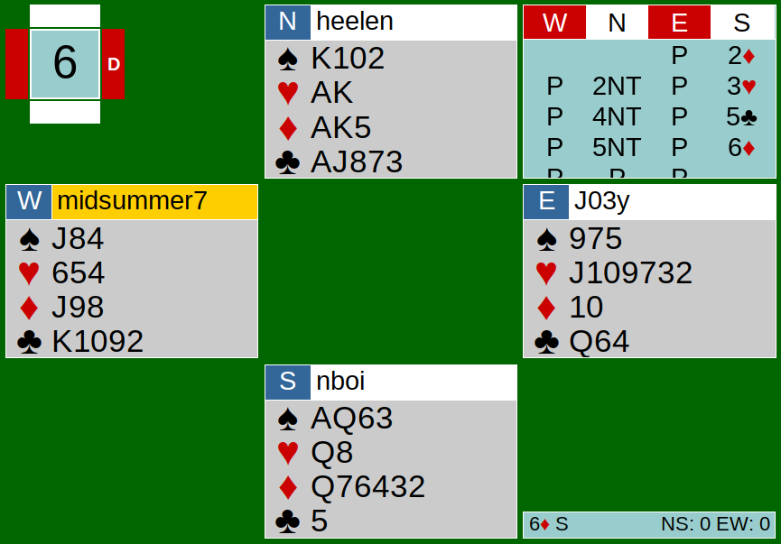

Cardology Kidz’ team game on June 13th was between Team iOS (Nathan, Helen, Chloe, Nancy) and Team Android (Edmond, Victorin, Joe, Joey). May the best operating system win.
There were a lot of contracts that made slam, or even grand slam. Some pairs were able to bid all the way up there, but some weren’t. Today, we will be looking at Board 6 from both Team iOS’s and Team Android’s table.

Team Android’s Table
North started the auction after three passes by opening 2NT, showing 20-21 points. To my surprise, when it came around to South’s turn, South decided to pass with 10 points. As a reminder, 25 points is generally needed for game and 33 points is generally needed to make slam (on the 6-level). In South’s position, South should know that they have at least 30 points together, so they should at least go to game, and consider a slam contract in a suit (S holds a singleton club). Unfortunately, the auction ended at 2NT by North.
The play at Team Android’s table was solid all around. East made the opening lead of the 7 of hearts, fourth best from her longest suit. We did learn to lead fourth best, but here in this case, there is a sequence. Lead top of a sequence, so the right lead should have been the Jack of Hearts from JT9xxx. It turns out the lead did not matter because NS ran their diamond suit. One thing to note is that right after North took the 7 of hearts with the king of hearts, he chose to cash all his heart and spade winners in his hand. In this case, it did not matter, because NS were only missing one King, one Queen, and a few Jacks. However, if NS were missing a stopper, then a safer way to play this would have been setting up their longest suit, which in this case were diamonds. I also want to mention how North set up the diamonds on the board. North played low from AKx to the Queen on the board. It is important to play your high cards on the short side; meaning play the Ace and the King from your hand, and then play a low one to the Queen on the board. You will run into transportation issues. Here, North had to play a spade to the board to run the diamonds. If there had not been any transportation to the dummy, meaning if you could not get back to dummy, then you wouldn’t be able to pitch your losers on the suit you set up. Besides these two minor notes, NS was able to take all 13 tricks. 270 points for making 2NT+5.

Team iOS’s Table
The bidding at this table was much more lively and responsive. South began the auction by preempting 2D. North responded with 2NT (Ogust), showing a strong hand (16+) and support in diamonds. South responded with 3H, showing high values (8-10 points) and 1 honor in diamonds.
For those who are not familiar with Ogust, it is one way you can respond to your partner after your partner has preempted. I learned this from Nathan, and the way he taught me how to remember the response to 2NT (Ogust) really stuck with me. I remember it as “low low high high high, 1 2 1 2 3.” Starting from the lowest bid after 2NT, 3C would mean low points (less than 8) and 1 honor in the preempted suit. 3D would show low points and 2 honors in the suit, 3H would show high points (8-10 points) and 1 honor in the suit, and so forth. Your partner (the 2NT bidder) can respond to your strength that you showed accordingly.
North, wondering if they have slam in diamonds, bids 4NT (RKC 1430), asking for the amount of key cards (the Aces and the King of trump) South holds.
Remember, 5C shows 1 or 4 key cards, 5D shows 3 or 0 key cards, 5H shows 2 key cards without the Queen of trump, and 5S shows 2 key cards with the Queen of trump.
South bids 5C. North instantly knew that they have all the key cards together, as North holds the other 4 key cards in her hand, so North bids 5NT. Generally, South should bid his cheapest King, but since South does not have one, bidding 6D is a fine. Seeing that South had not bid 6C, which would have shown the King of clubs and the only King North was missing, North decided not to bid to 7D. The contract ended at 6D by South.
The play was fairly simple — pull trump, pitch and ruff North’s clubs, and claim the rest. Bid 6, made 7, for a score of 940 points. The score difference between the two tables were significant, giving Team iOS 12 IMPs for bidding to slam. In today’s team game, the key lesson we learned is to not pass when we know for a fact we must be at least in a game contract. Bid on!